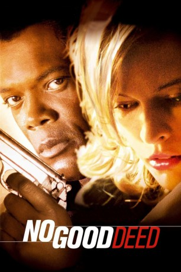

#9460 No Good Deed
 
 IMDB-Wertung: 5.5 / 10
IMDB-Wertung: 5.5 / 10  Metascore: 0
Metascore: 0 
Bob Rafelson inszenierte einen atmosphärisch dichten Noir-Thriller in Star- Besetzung. Jack Friar gerät bei der Suche nach einer verschwundenen 15-Jährigen in die Fänge einer Gangsterbande, die einen millionenschweren Coup plant.
Jahr: 2002
Dauer: 97 Minuten
FSK: 16
Land: Deutschland Studio: Splendid FilmTonspuren: DD5.1 - ,
Untertitel:
Auflösung: 1080p (1920x1048) Größe: 3880 MB
Genre: Action, Thriller, Drama, Musik, Krimi
Regisseur: Bob Rafelson
Drehbuch: Dashiell Hammett, Christopher Canaan, Steve Barancik
Soundtrack: Jeff Beal
Darsteller:
Datei: X:\2002\No Good Deed (2002, FSK16, 1920x1048).mkv seit 03.09.2018
Festplatte: HD 1996-2002
 Es gibt insgesamt 93 Filme in der Gruppe '2002'
Es gibt insgesamt 93 Filme in der Gruppe '2002'